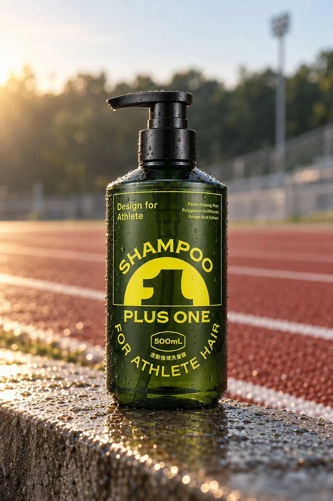
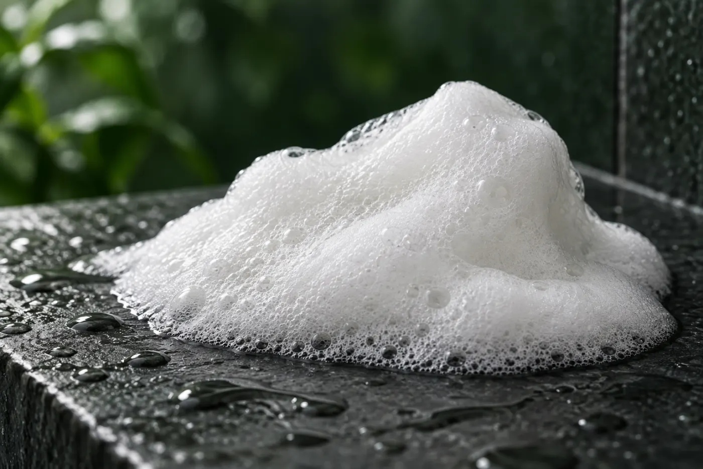
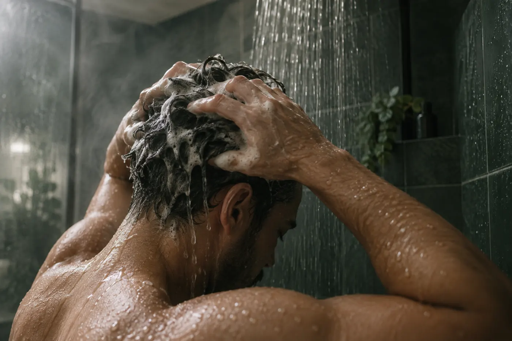
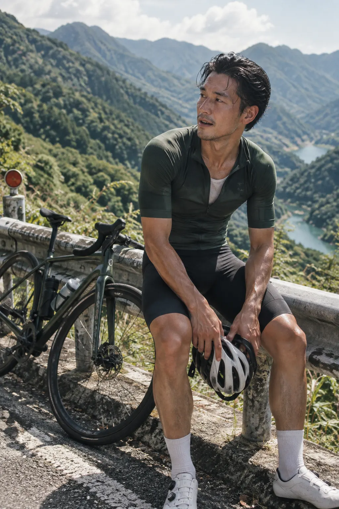
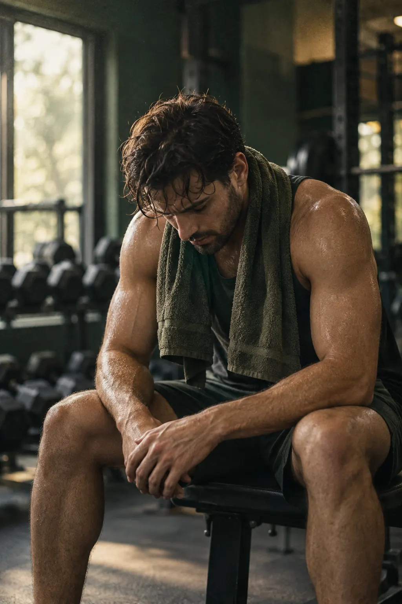
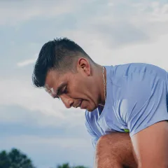

Active Ingredients · 精選成分
為訓練後的頭皮，
不是一般日常清潔。
每一種成分都針對訓練後的頭皮狀態：悶熱、出油、被汗水浸泡。
- 1Korean Ginseng Extract
高麗人蔘萃取
強化髮絲韌性，維持頭皮健康環境。
- 2Polygonum Multiflorum
何首烏萃取
滋養頭皮，舒緩訓練後頭皮的乾燥與緊繃。
- 3Ginger Root Extract
薑根萃取
調理頭皮環境，維持清潔後的清爽健康。


When to Use · 適用場景
頭皮被汗水浸泡之後
頭皮悶癢出油，往往不是洗得不夠勤，而是一般洗髮精洗不掉長時間運動留下的汗脂。

①長時間戴安全帽
自行車、鐵人三項，頭皮悶在安全帽裡好幾個小時。
- ②
戴頭巾、帽子的越野跑
山徑與戶外訓練，汗水被悶在頭巾底下。

③重訓與高強度訓練後
頭皮大量出汗，洗完還是悶、還是癢。
How to Use · 使用方法
賽後第一步
使用方法待提供
洗完頭皮，接著用護髮乳修護髮絲。
Specification · 產品規格
產品規格
完整標示請以瓶身背標為準。
- 品名Name
- PLUS ONE 運動強健洗髮露 Shampoo For Athlete Hair
- 適用For
- 針對油性髮質、訓練後頭皮悶熱設計。
- 容量Volume
- 500 mL
- 香調Scent
- 清新草本木質調
- 標示成分Key Ingredients
- Panax Ginseng Root, Polygonum Multiflorum, Ginger Root Extract
- 全成分Ingredients
- 待提供（請依瓶身背標）
- 產地Origin
- 台灣 Made in Taiwan

重訓後頭皮特別悶，以前洗完還是會癢。用了這款之後頭皮呼吸順多了，也不會乾燥脫屑。配方乾淨，用起來很安心。吳建霖 Chien-Lin Wu · Powerlifter · 健身教練
Complete the System
搭配另外兩步
先洗頭皮，再護髮絲，最後洗身體。